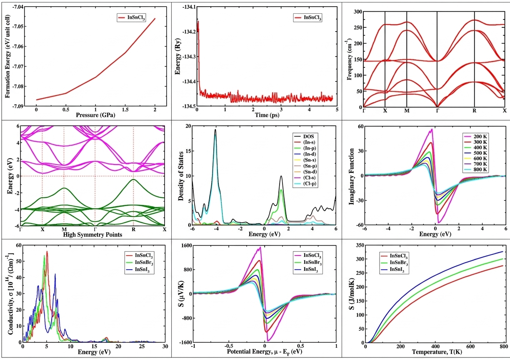
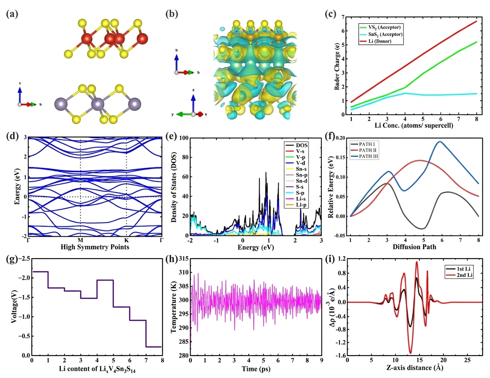
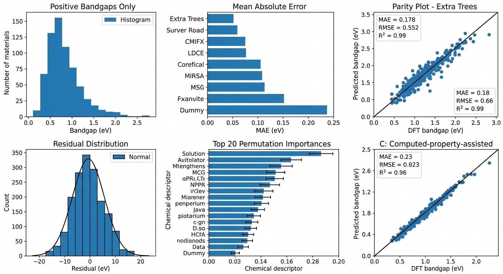
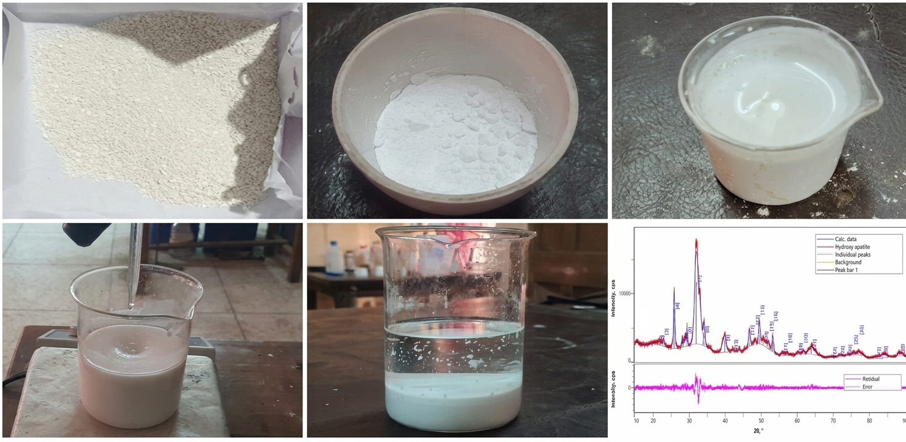

First-principles calculations
Electronic structure, structural stability, and property prediction using density functional theory (DFT).
MATERIALS SCIENCE AND ENGINEERING
MSc. in Engg. · Teaching Assistant · Khulna University of Engineering & Technology
Computational materials research focused on understanding and designing materials through simulations and data-driven methods.

02 / RESEARCH PROFILE
I am interested in computational materials science, using atomistic simulations and data-driven approaches to investigate materials for energy-related applications.
Electronic structure, structural stability, and property prediction using density functional theory (DFT).
Materials for batteries, hydrogen storage, optoelectronics, and related energy technologies.
Machine learning, materials descriptors, screening, and computational materials databases.
Research direction: How can computational simulations and experimental investigations be integrated to understand fundamental material properties, establish structure–property relationships, and develop innovative materials for next-generation energy storage technologies?
03 / RESEARCH WORK
Selected thesis and project work
Research summaries · Methods · Documents
Using Quantum ESPRESSO, this thesis goes beyond the usual study of optical, electronic, and mechanical properties. It also explores thermoelectric, thermodynamic, and thermophysical properties, which were largely overlooked in previous studies of InSnX3. Finding reliable guidelines and learning the necessary methods were major challenges. Learning and applying Quantum ESPRESSO was one of the most demanding parts of this research. However, overcoming these challenges allowed me to explore the materials in greater depth and investigate their potential for practical applications.
To what extent can external pressure enhance or modify the physical properties of InSnX3 (X = Cl, Br, I) perovskites?
Density Functional Theory (DFT), Quantum ESPRESSO, and its associated post-processing packages.
Independently learned and applied Quantum ESPRESSO. Explored rarely studied properties and uncovered new insights.

This research investigates 2D heterostructures as potential anode materials for Li and Na-ion batteries. Using first-principles calculations, I have studied the structural stability, ion adsorption and diffusion/migration, electronic properties, and electrochemical performance of VS2|SnS2 heterostructures. By combining atomistic simulations with electrochemical modeling, this work connects atomic-scale behavior with practical battery performance. The goal is to understand how interfacial engineering can improve ion storage and transport in next-generation batteries.
How can interfacial engineering in two-dimensional heterostructures be used to enhance ion storage, diffusion, and electrochemical performance in next-generation Li and Na-ion batteries?
Density Functional Theory (DFT) using Quantum ESPRESSO, Python-based heterostructure construction and analysis with ASE and ZSLGenerator, and PyBaMM for electrochemical modeling.
Completed heterostructure construction, Li-ion adsorption and diffusion analysis, and electrochemical evaluation. Currently preparing manuscripts for journal publication and conference presentation.

This project explores machine learning for band-gap prediction in ABX3 perovskites using 1,005 materials collected from the Materials Project. Two complementary approaches were developed: chemical-descriptor-based regression for 180 semiconductors and a two-stage framework combining metallicity classification with band-gap regression using multiple material properties. The initial regression achieved an MAE of 0.574 eV, which improved to 0.430 eV (approximately 25% lower error) through feature optimization in the second workflow. The classification model achieved a balanced accuracy of 90.1%. These results demonstrate the potential of machine learning for faster perovskite screening and prioritization, helping reduce dependence on computationally expensive first-principles calculations.
Source: Materials Project API. Dataset: 1,005 materials with 159 total features. Target variables: metallicity classification and bandgap regression.
Models: classification & regression based. Validation: 5-fold CV. Metrics: Classification- balanced accuracy, ROC-AUC, PR-AUC; Regression- MAE, RMSE, R2
Compared feature sets and optimized ML models through feature selection to improve bandgap prediction and enable efficient perovskite screening.

Investigated the synthesis of hydroxyapatite (HAp), a calcium-phosphate ceramic with potential applications in biomaterials, using waste eggshells as a sustainable calcium precursor. The project involved converting eggshell-derived calcium oxide into calcium hydroxide, followed by wet-chemical precipitation using diammonium hydrogen phosphate (DAP). The synthesized powder was subsequently subjected to heat treatment and structural characterization to evaluate its crystallographic properties and confirm HAp formation.
To investigate its structural and crystallographic properties through X-ray diffraction analysis, with particular emphasis on phase identification, lattice parameters, crystallite size, and crystallinity.
Synthesized hydroxyapatite from waste eggshells through calcination, slaking, and wet-chemical precipitation, followed by heat treatment and XRD-based structural characterization.
Performed experimental synthesis and powder processing, analyzed XRD data, and evaluated crystallographic parameters, including lattice constants, crystallite size, and crystallinity.

* Most of the works presented in this section are independently conducted. Some collaborative projects have been omitted due to technical constraints and limitations in documenting their contributions.
04 / EDUCATION
Khulna University of Engineering & Technology (KUET)
Current CGPA: 4.00/4.00
Ongoing Courses: Advanced Materials Characterization Techniques; Numerical Modelling of Photonic Materials and Devices
Supervisor: Dr. Md. Rafiqul Islam, Professor, Department of Electrical and Electronic Engineering, KUET
Khulna University of Engineering & Technology (KUET)
CGPA: 3.58/4.00 · Ranked 9th among 69 students
Dean's List Award: Session 2022–23 · Faculty of Electrical and Electronic Engineering
Supervisor: Dr. Md. Rafiqul Islam, Professor, Department of Electrical and Electronic Engineering, KUET
Bangladesh Computer Council, ICT Division - Govt. of Bangladesh
Completed an 80-hour comprehensive training program under the EDGE Project of the ICT Division, Government of Bangladesh, earning a certificate upon successful completion.
* Details of completed academic coursework are provided in the Documents section.
05 / EXPERIENCE
Department of Materials Science and Engineering · KUET
Metamaterials Club of KUET
BSRM · Tusar Ceramics & B&T Cables · GPH Ispat
06 / TECHNICAL TOOLKIT
An overview of my research capabilities, interdisciplinary expertise, computational approaches, and technical competencies developed through academic and research experience.
Quantum ESPRESSO (QE) · QE post-processing packages- Critic2, BoltzTraP2, Bader, Gibbs2 · Materials Studio · LAMMPS · SCAPS-1D · AutoCad · Origin · Linux OS
C · Python and its necessary modules · API Fetching · Data/Web Scraping · Machine Learning (ML) & models · Artificial Neural Network (ANN) in DL · Data Science
Computational Materials Science · 2D Heterostructures · Energy Storage · ML & DL for Materials · First-Principles Modeling · Biomaterials · Nanomaterials
Analytical & Critical Thinking · Independent Research & Problem-Solving · Interdisciplinary Thinking · Adaptability & Continuous Learning · Scientific Communication
07 / CONTACT
I welcome conversations about research collaboration, doctoral opportunities, and computational materials science.
BEYOND THE PROBLEM · TOWARD THE SOLUTION
To understand the depth of a problem, seek the wisdom of one who has failed a hundred times.
To discover its solution, seek the insight of one who conquered it on the first attempt.
A reflection on my understanding, perseverance, and discovery.